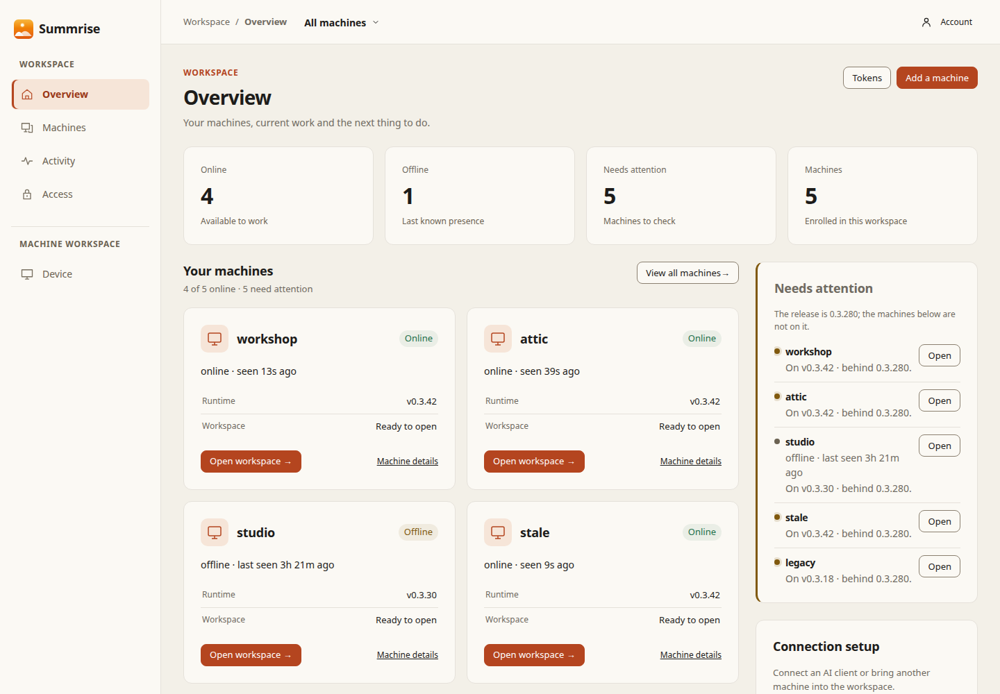

Work where the work lives.
Open terminal, SSH or serial sessions. Run commands on the machine and work with files under its declared roots. These tools are built in.
AI tools. Real machines. Your control.
Give AI the tools on a real machine. Keep the machines, the work and the call record together — with a way to take over whenever you need it.
Windows 10/11 · x64 · Connect through MCP
Inside Summrise
See its presence and current state before you start.
Move into terminal, files or browser work on that machine.
Read the call, its source and the result in the record.

The Console image is unavailable. Open the console or read the docs to explore the workspace.
Built for the real environment
Its network. Its files. Its working tools. Summrise puts an MCP endpoint in front of them.
Open terminal, SSH or serial sessions. Run commands on the machine and work with files under its declared roots. These tools are built in.
Chrome runs on the device’s network and profile. Browser tools and screen captures let you inspect what is there, while the console keeps the machine context in view.
Explore the browser toolsBuilt-in and plugin tools appear behind the same machine endpoint. Install an MCP server from a directory you trust when you need another capability.
Plugins run with this machine’s privileges. They have no sandbox or signature check.
Operator control
Access, evidence and a way to take over belong beside the tools.
A client token names the allowed tools and whether they can change the machine. Revoke it when that access should end.
Each call leaves a record of the machine, token and outcome. Follow the evidence instead of guessing what happened.
Open the same machine’s terminal or screen from the console. The operator has a direct way back into the work.
From install to first connection
Choose a published installer for the Windows machine you want to connect. The installer puts the service in place.
Find a releaseUse the console’s enrollment code on the machine. It connects outward; no inbound port listens by default.
Go to the consoleUse the machine’s endpoint and a token with the tools you intend to allow. Make a call and read its record.
Read the connection stepsGet Summrise
Windows 10/11 · x64. Choose a published release and its files. The device uses the signed release document to verify update bytes.
Latest published release: see the releases page
Choose a published release to see its available downloads.
SummriseSetup-<version>.exe
release-<version>.json
SHA256SUMS